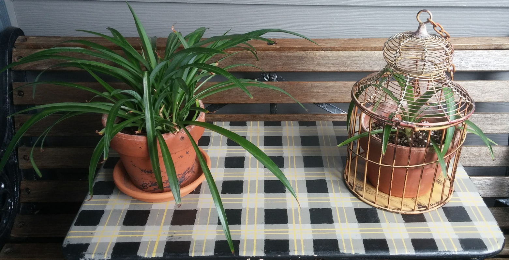
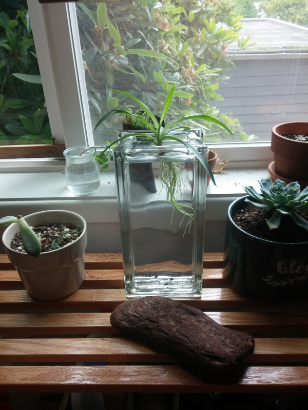

Sansevierias
It all started with my crusade for cleaner indoor air. We got this beauty from a rummage sale at a local church. It's a Sansevieria, also known as mother-in-law's tongue or snake plant. They are supposedly quite good at air filtration.
I split the original plant and divided the bits over a couple other pots. I also propagated some babies from one of the leaves. Just look at them; aren't they majestic?
Spider plants
Just like snake plants, Spider plants are known for their air filtrating capabilities. In fact, according to a study conducted by NASA, these plants filter formaldehyde and xylene out of the air for us. Note how the Sansevieria's also in the list of awesome plants for air quality.
We got the spider plant in offshoot-form from my mother-in-law. They do extremely well when left to root in just water, as you can see in the picture below.
Cactuses
Recently we picked up one cactus at an estate sale. We removed all the lumps attached to it, and planted all of them. We got over 20 mini-cactuses out of it. Here's to hoping they survive:  Because it is hard to identify a cactus, we did some research and still didn't know what exact species they are. We kept it at some type of barrel cactus. Judge for yourself:
Because it is hard to identify a cactus, we did some research and still didn't know what exact species they are. We kept it at some type of barrel cactus. Judge for yourself: